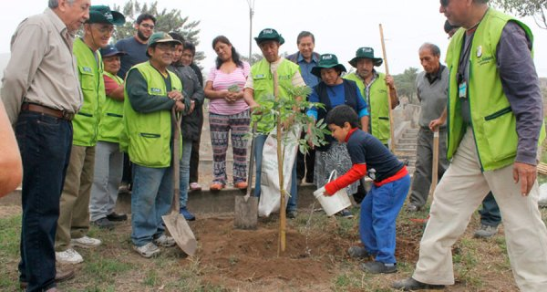
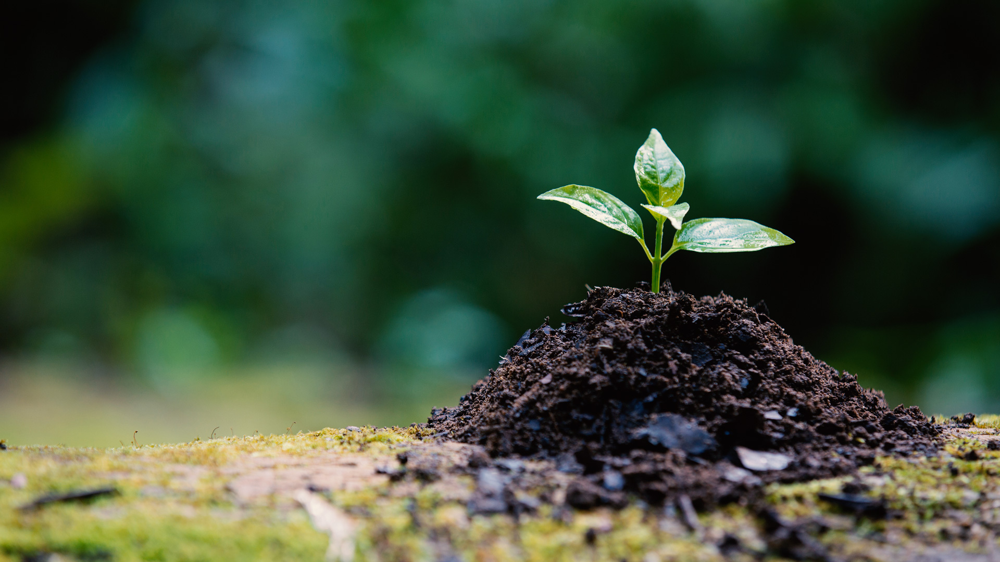
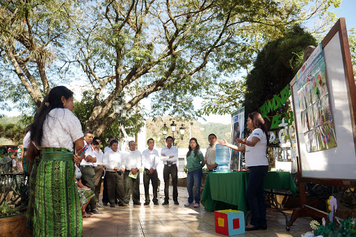
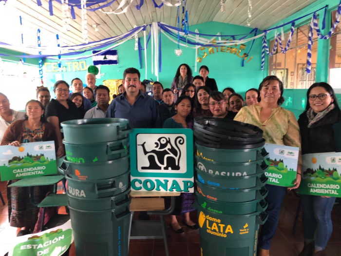

En conmemoración con el Día mundial de la Educación Ambiental,
nuestros aliados reunieron algunas experiencias Latinoamericanas
de empresas y fundaciones que han generado capacidades en las
comunidades para crear proyectos en armonía con el medio ambiente
y el territorio. Nosotros compilamos cuatro de ellas para resaltar
el trabajo realizado en Argentina, Guatemala, México y, por
supuesto, Colombia.
Argentina

Fundación Holcim Argentina en Córdoba creó una iniciativa llamada
cartografía social y acupuntura Urbana para revitalizar las
comunidades cercanas a las plantas Holcim Argentina, a través del
cuidado del ambiente y la construcción de espacios públicos que
promuevan una cultura ciudadana; en articulación con la Política
Ambiental y de Construcción Sostenible de la compañía. Se
sistematizaron buenas prácticas y se transformó el espacio público.
Conoce más: http://bit.ly/2AXLqlR

“La Alternancia” es un modelo de educación técnica integral, agropecuaria
y forestal, con énfasis en la creación de micro empresas rurales el cual
fue implementado por la Fundación Smurfit Kappa Colombia. El modelo educativo
contempla tanto el acceso a microcréditos para el desarrollo de los
emprendimientos rurales de los estudiantes y sus familias, y el acompañamiento
técnico a las iniciativas. Gracias a esto los jóvenes y las familias
tienen una generación de ingresos e involucramiento en los asuntos públicos.
Conoce más: http://bit.ly/2HpXhif

Lazos de Agua en el Departamento de San Marcos, Guatemala, surgió con
el objetivo de mejorar la salud y la subsistencia de comunidades rurales
a través de acceso a agua segura, saneamiento mejorado y educación en
higiene. La iniciativa busca lograr la sostenibilidad de las intervenciones
a través del desarrollo de estructuras comunitarias que se encarguen del
mantenimiento y gestión del equipo. Participan en la experiencia Fundación
FEMSA, CARE como parte de Millennium Water Alliance, Coca-Cola América
Latina y la Oficina Municipal de Agua y Saneamiento de Tacaná.
Conoce más: http://bit.ly/2T5Kt25

CEMEX México creó el Programa de Restauración Ambiental Comunitaria
(PRAC) para fortalecer el conocimiento ambiental entre los jóvenes,
a través de capacitaciones, diagnóstico comunitario, y actividades
participativas de restauración y mejoramiento ambiental. Así como
fortalecer la relación con los grupos locales y el liderazgo de
la empresa en temas ambientales. El programa está basado en el
modelo de Educación Ambiental Participativa (EAP), el cual reconoce
e incorpora los conocimientos y las prácticas de los participantes
en los procesos educativos.
Conoce más: http://bit.ly/2AXyRXK